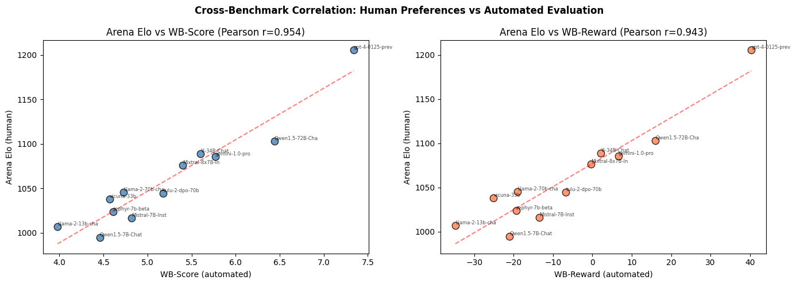
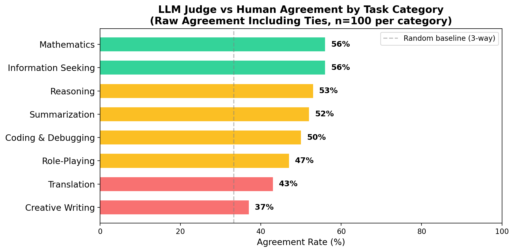
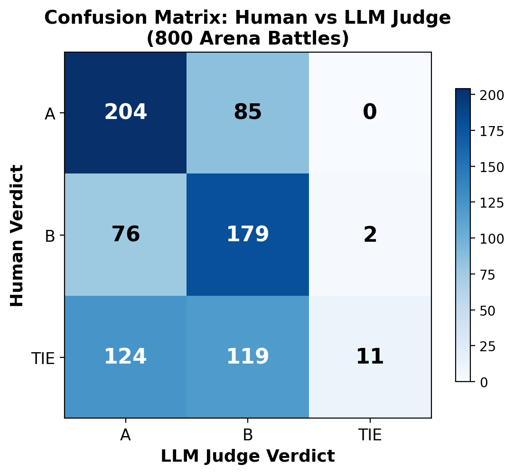
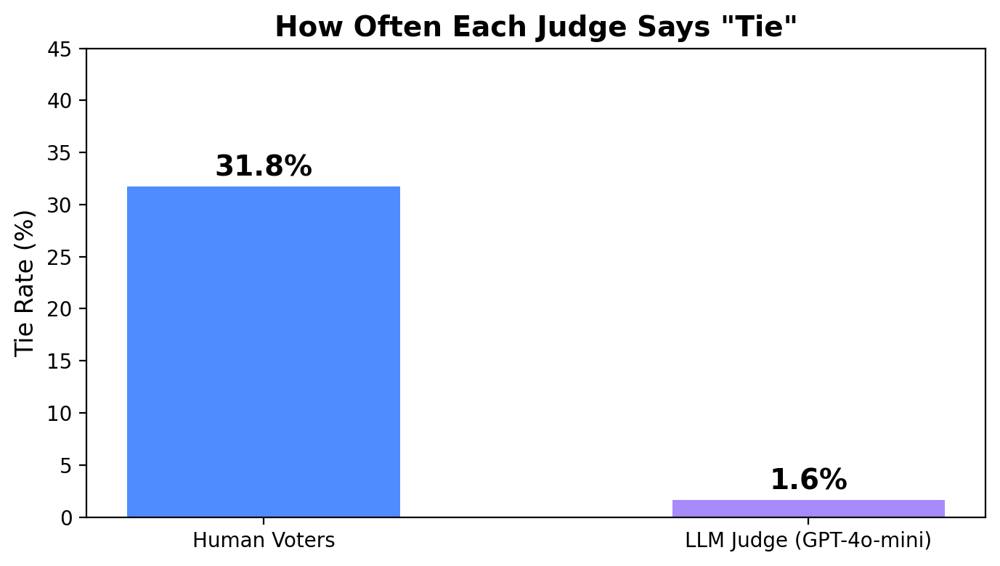

MIE1512 — Data Infrastructure & Analytics
An Alignment Study Between Automated and
Human Evaluation of LLM Task Performance
Yifan Liu | 1007341681
Department of Mechanical and Industrial Engineering, University of Toronto
Instructor: Prof. Mariano P. Consens
March 2026
User: "Why do leaves change color in autumn?"
LLM Response: "As days shorten, trees stop producing chlorophyll, revealing yellow and orange pigments (carotenoids) that were masked. Red colors come from anthocyanins produced in response to bright light and cool temperatures."
Is this response accurate? Complete? Easy to understand? How do we evaluate quality at scale?
Gold standard: Human evaluation via crowdsourcing — real users compare two LLM responses and vote for the one they prefer. But this is slow, expensive, and hard to scale (collecting 57K votes took over a year).
Alternative: Use a strong LLM (e.g., GPT-4) as an automated judge to score other LLMs' outputs. Recent benchmarks report Pearson r = 0.95 correlation with human evaluation at the aggregate level.
But this r = 0.95 is computed over only 14 model-level data points. Every benchmark can tell GPT-4 from Llama-2 — the large inter-model gaps inflate correlation. Does this agreement hold across all task types?
Can an LLM judge's evaluation of LLM task performance
align with human stated preferences
across different task categories?
LLM Judge
GPT-4-turbo evaluates
LLM outputs via checklists
(WildBench)
Human Preference
Real users vote on which
LLM response they prefer
(Chatbot Arena)
Task Categories
Coding, Math, Writing,
Translation, Reasoning...
(WildBench taxonomy)
Instead of expensive human evaluation, use a powerful LLM to judge other LLMs' outputs automatically.
Without a checklist, the judge LLM might focus on surface features (fluency, length). The checklist forces it to evaluate task-specific requirements:
Paper: Lin et al., "WildBench: Benchmarking LLMs with Challenging Tasks from Real Users in the Wild," ICLR 2025 Spotlight
Uses GPT-4-turbo to evaluate other LLMs' performance on 1,024 real-user tasks from WildChat.
"Why do leaves change color in autumn?"
GPT-4-turbo creates criteria for this specific question:
GPT-4-turbo evaluates the LLM's response against each checklist item and assigns a score.
WB-Score (Pointwise)
Rate a single response on a 1-10 scale.
e.g., "This explanation scores 7/10 — accurate but misses anthocyanins."
WB-Reward (Pairwise)
Compare two responses against 3 reference models. Five outcomes:
Task Categories
All 1,024 tasks are classified into 12 categories:
"Why do leaves change color in autumn?"
Model A response:
"Leaves change color because of the weather getting colder. The green color fades and other colors show up."
Checklist evaluation:
✗ Explains chlorophyll role? No
✗ Mentions pigments by name? No
~ Scientifically accurate? Vague
✓ Easy to understand? Yes
WB-Score: 4 / 10
Model B response:
"As days shorten, trees stop producing chlorophyll, revealing carotenoids (yellow/orange). Red comes from anthocyanins, produced in response to bright light and cool nights."
Checklist evaluation:
✓ Explains chlorophyll role? Yes
✓ Mentions pigments by name? Yes
✓ Scientifically accurate? Yes
✓ Easy to understand? Yes
WB-Score: 9 / 10
WB-Reward (pairwise): Model B is "Much Better" than Model A. | Both scores are generated entirely by GPT-4-turbo — no human involved.
We apply the LLM judgment method to this large-scale human preference dataset to test whether LLM judges agree with real humans.
Paper: Chiang et al., "Chatbot Arena: An Open Platform for Evaluating LLMs by Human Preference," ICML 2024
1.7M+
total voting records
57,477
battles with full text (prompt + responses)
64
models
Elo
Bradley-Terry ratings
Each of the 57,477 records contains:
| Field | Example Value |
|---|---|
| prompt | "Is it morally right to try to have a certain percentage of females on managerial positions?" |
| model_a | gpt-4-1106-preview (hidden from user during vote) |
| model_b | gpt-4-0613 (hidden from user during vote) |
| response_a | "The question of whether it is morally right to aim for a certain percentage..." (full text) |
| response_b | "As an AI, I don't have personal beliefs..." (full text) |
| winner | model_a ← the human's stated preference |
Elo Rating = aggregate all 1.7M votes using the Bradley-Terry model to produce a single ranking score per model. P(A beats B) = 1 / (1 + 10(Elo_B - Elo_A)/400). Higher Elo = humans preferred this model more often overall.
For each Arena battle, we feed the same prompt + response_a + response_b to an LLM judge and ask: "Which response is better?"
Now each battle has two verdicts:
Human vote: A wins / B wins / Tie
LLM judge: A wins / B wins / Tie
We use GPT-4o-mini as judge (cost: ~$23 for full dataset)
We classify each Arena prompt into WildBench's task categories using keyword matching:
"Write python code..." → Coding
"Solve this integral..." → Math
"Translate to French..." → Translation
"Write me a poem..." → Creative Writing
Key question: compute agreement rate between LLM judge and human per category. Does the LLM judge agree with humans on coding tasks? Math? Translation?
Part III
| Comparison | Pearson r |
|---|---|
| WB-Reward vs Arena Elo (top 6) | 0.984 |
| WB-Reward vs Arena Elo (all 14) | 0.973 |
| WB-Score vs Arena Elo (all 14) | 0.940 |
From WildBench Table 3 (Lin et al., 2025)
Model-level, not task/prompt-level.
Each model gets one overall WB-Score and one Elo. The correlation is computed across just 14 (x, y) pairs.
This mainly captures cross-model differences — every benchmark agrees that GPT-4 > Llama-2. The large inter-model gaps inflate the correlation.
It tells us nothing about whether the LLM judge agrees with humans on individual prompts or specific task types.

Our replication: r = 0.954 with 12 overlapping models — confirming the high aggregate correlation
GPT-4o-mini judged 800 Arena battles (100 per category). Raw agreement rate = does the LLM judge pick the same winner as the human?

| Category | n | Agreement | Interpretation |
|---|---|---|---|
| Mathematics | 100 | 56% | Objective, verifiable |
| Info Seeking | 100 | 56% | Factual, clear answers |
| Reasoning | 100 | 53% | Partially objective |
| Summarization | 100 | 52% | Accuracy + style |
| Coding | 100 | 50% | Code correctness |
| Role-Playing | 100 | 47% | Subjective, persona |
| Translation | 100 | 43% | Cross-lingual |
| Creative Writing | 100 | 37% | Highly subjective |
| Overall | 800 | 49.2% | 3-way random = 33% |
Pattern: LLM judges agree with humans more on objective tasks (math 56%, info seeking 56%) and least on subjective tasks (creative writing 37%). Overall 49% includes ties — humans say "Tie" 32% of the time, but the LLM judge almost never does (1.6%).


Human voters say "Tie" 31.8% of the time (254/800). Many battles are genuinely close — both responses are comparable.
LLM judge says "Tie" only 1.6% of the time (13/800). It almost always picks a winner, even when humans couldn't decide.
Implication: The LLM judge is overconfident. On the 254 human-tie battles, the judge's forced choice is essentially a coin flip — dragging down raw agreement.
1. Full-scale evaluation
Run GPT-4o-mini judge on all 57,477 Arena battles (~$23) instead of the 800-sample pilot.
2. Per-category WildBench scores
Load WildBench's per-category WB-Scores (not just overall) for a fairer category-to-category comparison with Arena.
3. AlpacaEval 2 triangulation
Add length-controlled win rates from AlpacaEval 2 as a third evaluation perspective.
1. Checklist ablation
Run the same judge with and without checklists on Arena data — does the checklist actually improve agreement?
2. Judge model comparison
Compare GPT-4o-mini vs GPT-4-turbo vs Claude as judge — does a stronger judge agree more with humans?
3. Elo gap analysis
Does the LLM judge agree with humans more on "easy" battles (large Elo gap between models) vs "hard" battles (close Elo)?
Question: Can LLM judgment capture human preference across task categories?
Finding 1: The reported r = 0.95 correlation is based on 14 model-level aggregate points — it masks category-level variation.
Finding 2: At the individual battle level, raw LLM-human agreement ranges from 56% (math, info seeking) to 37% (creative writing) — overall 49.2%.
Finding 3: The LLM judge is overconfident — it says "Tie" 1.6% vs humans' 31.8%, suggesting it forces decisions on ambiguous battles.
LLM judges can partially substitute for human evaluation on objective tasks,
but should not be trusted for subjective tasks like creative writing.
Thank you — Questions?